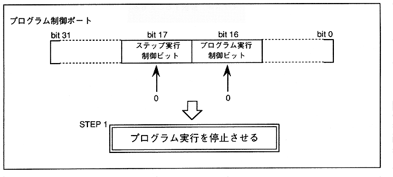

(1) Load DSP program (2) DSP data access (3) DSP program execution start (4) DSP program forced stop
(1) Set bit16 and bit17 of the program control port to 0. (2) Write the transfer start address to the program RAM address of the same port. ∙ It cannot be set unless the DSP is stopped. (3) Sequential program data in longword units in the program RAM data port Write out the data.
Figure 2.15 Load DSP program Step1
